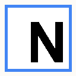

Thanks for installing NotebookTools
Import YouTube videos, webpages, X posts, and highlighted text into NotebookLM.
1. Pin the extension
Click the puzzle icon in Chrome, then pin NotebookTools for quick access.
2. Try YouTube import
On any YouTube watch page, click NotebookLM next to Like and Share. Pick a notebook and import in one click.
3. Import any tab
Open the extension popup on any webpage to add the current tab URL to NotebookLM.
4. Right-click highlights
Select text on any page, right-click, and choose Add to NotebookLM.
Sign in once
Keep NotebookLM signed in at notebooklm.google.com before importing.